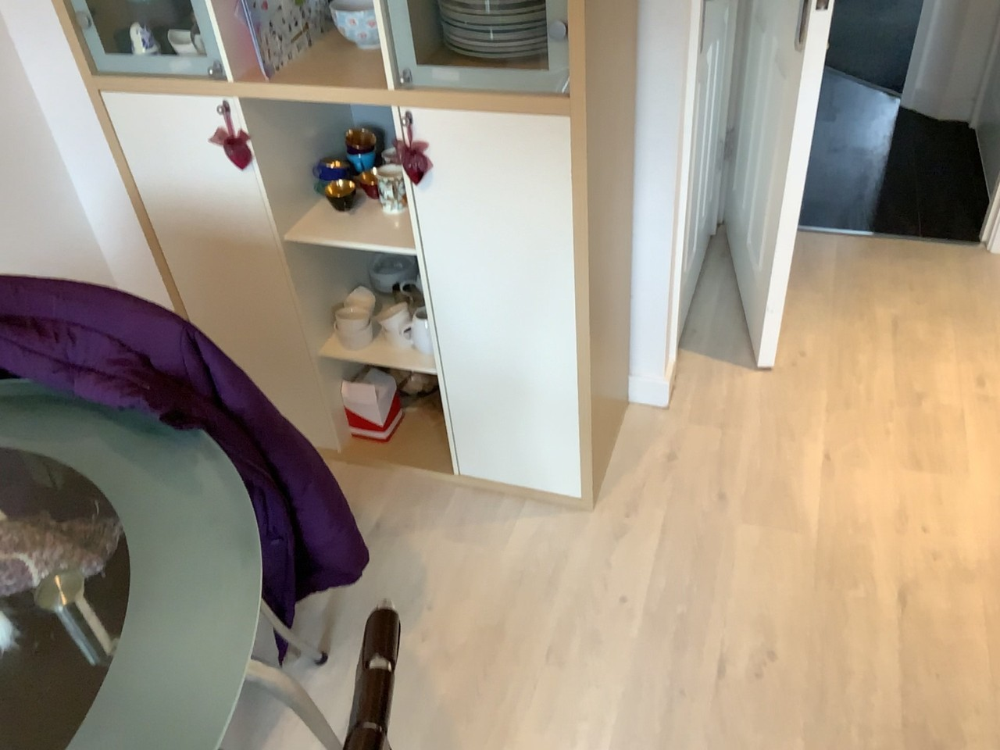

Recursive Self-Improvement
IEEE Spectrum May 2026
AI Is Starting to Build Better AI
Anthropic Institute
When AI builds itself
WIRED July 2026
I Built a Self-Improving AI, and So Can You
The idea
Recursive Self-Improvement
System improves itself
System improves at improving.
LLM
language modelAGENT LLM in a loop
WHAT IT CAN ACCESSHARNESS
01Instructions
02Memory
03Tools
{ }Control softwareruns the loop
REVIEW AND REWRITE
Give an LLM ways to act, observe, and adjust.
This surrounding setup is its harness.
The outer loop improves the harness.
RSI is (almost) all aboutimproving the harness(today)
How to improve the harness?
The feedback
Some tasks have
clear checks.
Code
Tests pass✓
Math
47 × 3 = 141
Answer checks out✓
Outside code and math
What if “better”
is harder to check?

Describe this image.What makes one answer better?
Suppose models become superhuman at code and math.
Can that help with tasks we can’t easily check?
Ask them to build tools or prove theorems on the fly.
A lot of self-improvement work starts with text.
{ }∑
What does it look like
in vision?
01 / Motion Recorded run
What happens behind the cover?
Loading saved frames…
The problem
A short clip. A hidden drawing point.
02 / A photograph Recorded run
How high was the camera?
Loading saved measurements…
The problem
Measure the camera’s height above the floor.
For your own work
How can I break my task
into parts the model
can check?
01
Let it write the tools.
02
Keep the check independent.
03
Test on new examples.
The next question